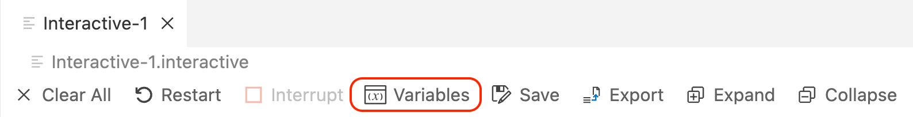
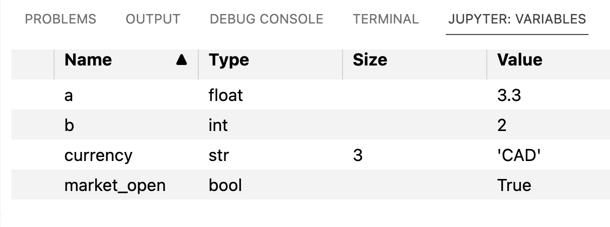
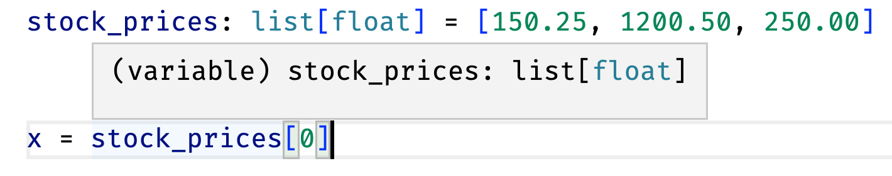
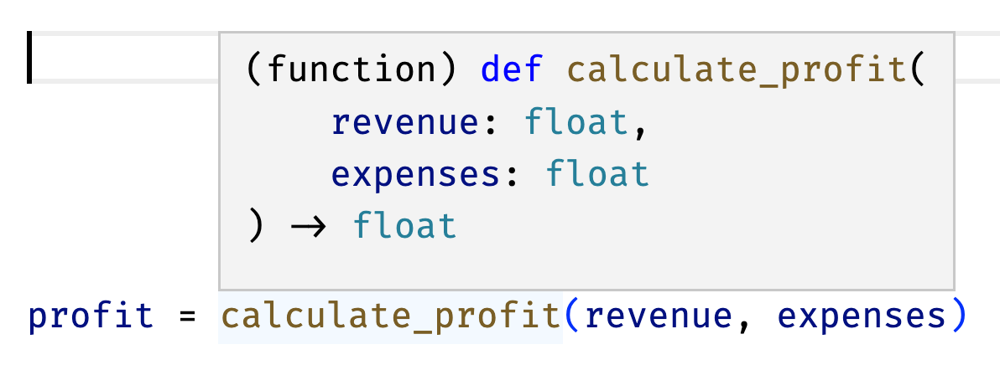

4242In this chapter, we lay the foundation for your programming skills by exploring the basic syntax of Python. My aim is to make this process as accessible as possible for non-programmers, while giving you the necessary tools to excel in the world of empirical finance research.
The objectives of this chapter are to:
By the end of this chapter, you will have a solid grasp of Python’s basic syntax, empowering you to use it as a versatile tool for finance-related tasks. Remember, the key to success in learning any programming language is practice. As you work through this chapter, be sure to experiment with the examples provided and try writing your own code to reinforce your understanding.
Let’s dive into the world of Python and begin your journey toward becoming a proficient financial empiricist.
The Python language offers many built-in fundamental data types. These data types serve as the building blocks for working with different kinds of data, which is critical in many applications. The basic data types you should be familiar with are presented in Table 3.1.
| Name | Type | Description | Example |
|---|---|---|---|
| Integer | int |
Integers represent whole positive and negative numbers. They are used for counting, indexing, and various arithmetic operations. | 1 |
| Float-Point Number | float |
Floats represent real numbers with decimals. They are used for working with financial data that require precision, such as interest rates, stock prices, and percentages. | 1.0 |
| Complex | complex |
Complex numbers consist of real and imaginary parts, represented as a + bj. While less commonly used in finance, they may be relevant in specific advanced applications, such as signal processing or quantitative finance. |
1.0 + 2.0j |
| Boolean | bool |
Booleans represent the truth values of True and False. They are used in conditional statements, comparisons, and other logical operations. | True |
| Text String | str |
Strings are sequences of characters used for storing and manipulating text data, such as stock symbols, company names, or descriptions. | "Hello" |
| Bytes | bytes |
Bytes are sequences of integers in the range of 0-255, often used for representing binary data or encoding text. Bytes may be used when working with binary file formats or network communication. | b"Hello" |
| None | None |
None is a special data type representing the absence of a value or a null value. It is used to signify that a variable has not been assigned a value or that a function returns no value. |
None |
A literal is a notation for representing a fixed value in source code. For example, 42 is a literal for the integer value of forty-two. The following are examples of literals in Python. Each code block contains code and is followed by the output of the code.
intint literals are written as positive and negative whole numbers.
4242-99-99They can also include underscores to make them more readable.
1_000_0001000000floatfloat literals are written as decimal numbers.
2.252.25They can be written in scientific notation by using e to indicate the exponent.
2.25e8225000000.0To define a whole number literal as a float instead of an int, you can append a decimal point to the number.
2.02.0complexComplex numbers consist of a real part and an imaginary part, represented as a + bj.
2.3 + 4.5j(2.3+4.5j)NoneNone is a special data type that represents the absence of a value or a null value. It is used to signify that a variable has not been assigned a value or that a function returns no value.
Noneboolbool is a data type that represents the truth values of True and False. They are used in conditional statements, comparisons, and other logical operations.
TrueTruestrStrings are sequences of characters. Strings literals are written by enclosing a sequence of characters in single or double quotes. Note that doubles quotes are preferred by the black code formatter, which is used in this book, but most Python environments will use single quotes by default when displaying strings.
"USD"'USD'Strings are sequences of Unicode characters, which means they can represent any character in any language.
"Bitcoin 🚀"'Bitcoin 🚀'String literals can span multiple lines by enclosing them in triple quotes or triple double quotes. This is useful for writing multiline strings.
# Multiline strings
"""GAFA is a group of companies:
- Google
- Apple
- Facebook
- Amazon
"""'GAFA is a group of companies:\n\n- Google\n- Apple\n- Facebook\n- Amazon\n\n'Multiline strings, or any strings with special characters, can be displayed using the print function.
print(
"""GAFA is a group of companies:
- Google
- Apple
- Facebook
- Amazon
"""
)GAFA is a group of companies:
- Google
- Apple
- Facebook
- Amazon
bytesbytes are sequences of integers in the range of 0-255. They are often used for representing binary data or encoding text. Bytes literals are written by prepending a string literal with b.
b"Hello"b'Hello'Bytes can be confused with strings, but they are not the same. Strings are sequences of Unicode characters, while bytes are sequences of integers in the range of 0-255. Bytes are often used for representing binary data or encoding text. In most cases, you will be working with strings, but you may encounter bytes when working with binary file formats or network communication.
A variable in Python is a named location in the computer’s memory that holds a value. It serves as a container for data, allowing you to reference and manipulate the data stored within it. Variables are created by assigning a value to a name using the assignment operator (=). They can store data of various types, such as integers, floats, strings, or even more complex data structures like lists.
Understanding the concept of variables and their naming conventions will help you write clean, readable, and maintainable code. An overview of variable naming rules in Python is presented in Table 3.2, and Table 3.3 presents some examples of valid and invalid variable names.
| Rule | Description |
|---|---|
| Can contain letters, numbers, and underscores | Variable names can include any combination of letters (both uppercase and lowercase), numbers, and underscores (_). Python variable names support Unicode characters, enabling you to use non-English characters in your variable names. However, they must follow the other rules mentioned below. |
| Cannot start with a number | Although variable names can contain numbers, they must not begin with a number. For example, 1_stock is an invalid variable name, whereas stock_1 is valid. |
| Cannot be a reserved word | Python has a set of reserved words (e.g., if, else, while) that have special meanings within the language. You should not use these words as variable names. |
| Valid | Invalid |
|---|---|
ticker |
1ceo |
firm_size |
@price |
total_sum_2023 |
class |
_tmp_buffer |
for |
Python is case-sensitive, so ret and RET are two different variables.
Beyond the rules mentioned above, there are also some conventions that you should follow when naming variables. These conventions are not enforced by Python, but they are widely adopted by the Python community. Table 3.4 summarizes the most common conventions.
| Convention | Description |
|---|---|
| Use lowercase letters and underscores for variable names | To enhance code readability, use lowercase letters for variable names and separate words with underscores. For example, market_cap is a recommended variable name, whereas MarketCap or marketCap are not. This naming convention is known as snake case. |
| Use uppercase letters for constants | Constants are values that do not change throughout the program. Use uppercase letters and separate words with underscores to differentiate them from regular variables. For example, INFLATION_TARGET is a suitable constant name. Note that Python does not support constants like other languages, so this is just a convention, but Python won’t stop you from changing the value of a constant. |
By adhering to these guidelines, you will improve your coding style and ensure that your code is easier to understand, maintain, and collaborate on with your peers.
Reserved keywords cannot be used as variable names. You can check the complete list of reserved keywords by running the following command in the Python console:
help("keywords")
Here is a list of the Python keywords. Enter any keyword to get more help.
False class from or
None continue global pass
True def if raise
and del import return
as elif in try
assert else is while
async except lambda with
await finally nonlocal yield
break for not
Note that some reserved keywords may be confusing when thinking about finance problems. For example, return, yield, raise, global, class, and lambda are all reserved keywords, so you cannot use them as variable names. Most modern IDEs, such as Visual Studio Code, will highlight reserved keywords in a different color to help you avoid using them as variable names.
A simple way to think about variables is to consider them labels that you can use to refer to values. For example, you can create a variable x and assign it a value of 42 using the assignment operator (=). You can then use the variable x to refer to the value 42 in your code.
x = 42
x42In the previous example, we added x to the last line of the code to display the value of x. This is necessary in the interactive window and in Jupyer Notebooks, as they automatically display the result of the last line of the code. However, the assignment operator (=) does not return a value, so the value of x is not displayed without that last line.
x = 42Introduced in Python 3.8, the := operator, also known as the walrus operator, allows you to assign a value to a variable and return that value in a single expression. For example, you can use the walrus operator to assign a value of 10 to a variable z and use that variable in the same expression, assigning the result to y.
y = (z := 10) * 2Note, however, that the walrus operator cannot be used to assign a value to a variable without using it in an expression. For example, the following code will raise an error.
x := 42SyntaxError: invalid syntax (4042238066.py, line 1)You can reassign the value of a variable by assigning a new value to it. Once you reassign the value of a variable, the old value is lost. For example, you can reassign the value of x to 32 by running the following code.
x = 32
x32You can perform operations on variables, just like you would on values. For example, you can add 10 to x.
x + 1042You can assign the result of an operation to a new variable. For example, you can assign the result of 2 * 10 to a new variable y.
y = 2 * x
y64z = x + y
z96If you try to use a variable name that is invalid, Python will raise an error. For example, if you try to assign a variable 1ceo, Python will raise an error because variable names cannot start with a number.
1ceo = 2SyntaxError: invalid decimal literal (1479589190.py, line 1)You can, however, use Unicode characters in variable names. For example, you can use accents such as é in a variable name.
cote_de_crédit = "AAA"A leading underscore in a variable name indicates that the variable is private, which means that it should not be accessed outside of the module or scope in which it is defined. For example, you can use a leading underscore in a variable name to indicate that the variable is private. This is a convention that is widely adopted by the Python community, but it is not enforced by Python.
_hidden = 30_000Another convention is to use all caps for constants. For example, you can use all caps to indicate that INFLATION_TARGET is a constant.
INFLATION_TARGET = 0.02Python will raise an error if you attempt to use a variable that has not been declared. For instance, if you try to use the variable inflation_target instead of INFLATION_TARGET, Python will generate an error. It’s important to note that Python is case-sensitive, so variables must be referenced with the exact casing as their declaration.
inflation_targetNameError: name 'inflation_target' is not definedPython is a dynamically typed language, meaning you do not need to specify the variable type when you declare it. Instead, Python will automatically infer the type of a variable based on the value you assign to it. For example, if you assign an integer value to a variable, Python will infer that the variable is an integer. Similarly, if you assign a string value to a variable, Python will infer that the variable is a string. You can use the type() function to check the type of a variable. For example, you can check the type of a by running the following code.
a = 3.3
type(a)floatb = 2
type(b)intmarket_open = True
type(market_open)boolcurrency = "CAD"
type(currency)strVS Code has a built-in variable explorer that allows you to view the variables in your workspace when using the interactive window or a Jupyer Notebook. You can open the Variables View by clicking on the Variables button in the top toolbar of the editor:

The Variables View will appear at the bottom of the window, showing the variables in your workspace, along with their values, types, and size for collections. For example, the following screenshot shows the variables in the workspace after running the code in this section:

You can convert a variable from one type to another using the built-in functions float(), int(), str(), and bool(). For example, you can convert the variable x, which is currently an int, to a float by running the following code.
float(x)32.0The same way, you can convert the variable y, which is currently a float, to an int by running the following code. Note that the int() function will round down the value of y to the nearest integer.
int(a)3Similarly, you can convert the variable x to a string by running the following code.
str(x)'32'You can convert a string to an integer or a float if the string contains a valid representation of a number. For example, you can convert the string "42" to an integer by running the following code.
int('42')42However, you cannot convert a string that does not contain a valid representation of a number to an integer. For example, you cannot convert the string "42.5" to an integer.
int('42.5')ValueError: invalid literal for int() with base 10: '42.5'When converting to a boolean value, most values will be converted to True, except for 0, 0.0, and "", which will be converted to False.
bool(0)Falsebool(1)Truebool("")Falsebool("33")TrueThe None value is a special type in Python that represents the absence of a value. You can use the None value to initialize a variable without assigning it a value. For example, you can initialize a variable problem to None by running the following code.
problem = None
type(problem)NoneTypePython provides built-in functions and operators to perform mathematical operations on numbers. Some commonly used mathematical functions include abs(), round(), min(), max(), and pow(). Additionally, Python’s math library offers more advanced functions like trigonometry and logarithms.
Floating-point numbers may be subject to rounding errors due to the limitations of their binary representation. Keep this in mind when comparing or performing calculations with floats. Consider using the Decimal data type from Python’s decimal library to avoid floating-point inaccuracies when dealing with high-precision financial data.
The Python language supports many mathematical operations. Table 3.6 lists some of the most commonly used operators.
| Operator | Name | Example | Result |
|---|---|---|---|
+ |
Addition | 1 + 2 |
3 |
- |
Subtraction | 1 - 2 |
-1 |
* |
Multiplication | 3 * 4 |
12 |
/ |
Division | 1 / 2 |
0.5 |
** |
Exponentiation | 2 ** 3 |
8 |
// |
Floor division | 14 // 3 |
4 |
% |
Modulo (remainder) | 14 % 3 |
2 |
a = 5
b = 3
print(f"Addition: a + b = {a + b}")
print(f"Subtraction: a - b = {a - b}")
print(f"Multiplication: a * b = {a * b}")
print(f"Division: a / b = {a / b}")
print(f"Exponentiation: a ** b = {a ** b}")
print(f"Floor Division: a // b = {a // b}")
print(f"Modulo: a % b = {a % b}")Addition: a + b = 8
Subtraction: a - b = 2
Multiplication: a * b = 15
Division: a / b = 1.6666666666666667
Exponentiation: a ** b = 125
Floor Division: a // b = 1
Modulo: a % b = 2The previous examples use a special type of strings called f-strings to format the output. f-strings are a convenient way to embed variables and expressions inside strings. They are denoted by the f prefix and curly braces ({}) containing the variable or expression to be evaluated.
We cover f-strings in more details in Section 3.7.2.
To round numbers, use the round() function. The round() function takes two arguments: the number to be rounded and the number of decimal places to round to. The number is rounded to the nearest integer if the second argument is omitted.
rounded_num = round(5.67, 1)
print(rounded_num)
print(type(rounded_num))
rounded_to_int = round(5.67)
print(rounded_to_int)
print(type(rounded_to_int))5.7
<class 'float'>
6
<class 'int'>Some mathematical functions will require the use of the math module from the Python Standard Library. The standard library is a collection of modules included with every Python installation. You can use the functions and types in these modules by importing them into your code using the import statement.
For example, to calculate the square root of a number, you can use the sqrt() function from the math module:
import math
math.sqrt(25)5.0This is only one of the many functions in the math module. You can view the complete list of functions in the module documentation. The math module also contains constants like pi and e, which you can access using the dot notation.
math.pi3.141592653589793It is often useful to generate random numbers for simulations and other applications. Python’s random module provides functions for generating pseudo-random1 numbers from different distributions.
The random module uses the Mersenne Twister algorithm to generate pseudo-random numbers. This algorithm is deterministic, meaning that given the same seed value, it will produce the same sequence of numbers every time. This is useful for debugging and testing but not for security purposes. If you need a cryptographically secure random number generator, use the secrets module instead.
The random.seed() function initializes the pseudo-random number generator. If you do not call this function, Python will automatically call it the first time you generate a random number. The random.seed() function takes an optional argument that can be used to set the seed value. This can be useful for debugging and testing, allowing you to generate the same sequence of random numbers every time. If you do not specify a seed, Python will use the system time as the seed value, so you will get a different sequence of random numbers every time.
import random
random.seed(42)random.random() generates a random float between 0 and 1 (exclusive).
rand_num = random.random()
rand_num0.6394267984578837random.randint(a, b) generates a random integer between a and b (inclusive).
rand_int = random.randint(1, 10)
rand_int1random.uniform(a, b) generates a random float between a and b (exclusive).
rand_float = random.uniform(0, 1)
rand_float0.7415504997598329random.normalvariate(mu, sigma) generates a random float from a normal distribution with mean mu and standard deviation sigma.
rand_norm = random.normalvariate(0, 1)
rand_norm-0.508616386057752The full list of functions in the random module can be found in the module documentation.
Because of the way computers store numbers, floating-point numbers are not exact. This can lead to unexpected results when performing arithmetic operations on floats.
2.33 + 4.446.7700000000000005To avoid this problem when exact results are needed, use the Decimal type from the decimal module to perform arithmetic operations on decimal numbers. You could import the module using import decimal but this would require you to prefix all the functions and types in the module with decimal. To avoid this, you can directly import the Decimal type from the decimal module using from decimal import Decimal.
from decimal import Decimal
Decimal("2.33") + Decimal("4.44")Decimal type from the decimal module. You can now refer to the Decimal type directly without having to prefix it with decimal.
Decimal('6.77')Using the Decimal type in Python provides precise decimal arithmetic and avoids rounding errors, making it suitable for financial and monetary calculations, while floats offer faster computation and are more memory-efficient but can introduce small inaccuracies due to limited precision and binary representation.
Many financial calculations involve performing arithmetic operations on financial data. Here are two examples of common calculations in finance and how they can be implemented in Python.
The formula for calculating the present value of a future cash flow is: PV = \frac{FV_t}{(1 + r)^t}, where FV_t is the future value of the cash flow at time t, r is the discount rate, and t is the number of periods.
future_value = 1000
discount_rate = 0.05
periods = 5
present_value = future_value / (1 + discount_rate) ** periods
present_value783.5261664684588The formula for calculating the future value of an annuity is: FV = PMT \frac{(1 + r)^t - 1}{r}, where PMT is the payment, r is the interest rate, and t is the number of periods.
It can be written in Python as:
payment = 100
rate = 0.05
periods = 5
future_value_annuity = payment * ((1 + rate) ** periods - 1) / rate
future_value_annuity552.5631250000007Python, just like mathematics, follows a specific order of operations when evaluating expressions. The complete list of precedence rules can be found in the Python documentation.
When in doubt, use parentheses to make the order of operations explicit.
For arithmetic operations, the order of operations is as follows:
-)Functions are blocks of organized and reusable code that perform a specific action. They allow you to encapsulate a set of instructions, making your code modular and easier to maintain. Functions can take input parameters, perform operations on those inputs, and return a result.
Defining a function in Python involves the following steps:
def keyword: Start by using the def keyword, followed by the function name and parentheses that enclose any input parameters.:) and indent the following lines to create the function body. This block of code contains the instructions that the function will execute when called.return statement to send the result back to the caller. If no return statement is specified, the function will return None by default.When defining functions, keep the following best practices in mind:
We can define functions to perform a wide variety of tasks. For example, we can define a function to calculate the present value of a future cash flow:
def present_value(future_value, discount_rate, periods):
return future_value / (1 + discount_rate) ** periods
# Example usage:
future_value = 1000
discount_rate = 0.05
periods = 5
result = present_value(future_value, discount_rate, periods)
print(f"Present value: {result:.2f}")present_value that takes three input parameters: future_value, discount_rate, and periods.
present_value function with the specified input values and stores the returned value in a variable called result. When the function is called, the input values are passed to the function as arguments in the same order as the parameters were defined. The function body is then executed, and the result is returned to the caller.
Present value: 783.53Indentation refers to the spaces or tabs used at the beginning of a line to organize code. It helps Python understand the program’s structure and which lines of code are grouped together.
The Python language specification mandates the use of consistent indentation for code readability and proper execution. Indentation is typically achieved using four spaces per level. It plays a crucial role in determining the scope and hierarchy of statements within control structures, such as loops and conditional statements. For example, the statements that are part of a function body must be indented to indicate that they are part of the function. The Python interpreter knows that the function body ends when the indentation level returns to the previous level.
We will learn more about functions in Section 3.11.
Text data is often encountered in finance in the form of stock symbols, company names, descriptions, or financial reports. Understanding how to work with strings is essential for processing and manipulating text data effectively.
Strings are sequences of characters, and they can be created using single quotes (' '), double quotes (" "), or triple quotes (''' ''' or """ """) for multi-line strings.
Some characters have special meanings in Python strings. The backslash (\) is used to escape characters that have special meaning, such as newline (\n) or tab (\t). To include a backslash in a string, you need to escape it by adding another backslash before it (\\). Alternatively, you can use raw strings by prefixing the strings with r or R, which will treat backslashes as literal characters. For example, these two strings are equivalent:
str1 = "C:\\Users\\John"
str2 = r"C:\Users\John"The Python language provides many common string operations. Table 3.7 lists some of the most commonly used operations.
| Operation | Example | Description |
|---|---|---|
| Concatenate strings | result = str1 + " " + str2 |
Combines two or more strings together |
| Repeat strings | result = repeat_str * 3 |
Repeats a string a specified number of times |
| Length of a string | length = len(text) |
Gets the length (number of characters) of a string |
| Access characters in a string | first_char = text[0] |
Retrieves a specific character in a string |
| Slice a string | slice_text = text[0:12] |
Extracts a part of a string |
| Convert case | upper_text = text.upper() |
Converts a string to uppercase |
lower_text = text.lower() |
Converts a string to lowercase | |
| Join a list of strings | text = ", ".join(companies) |
Joins a list of strings using a delimiter |
| Split a string | companies = text.split(", ") |
Splits a string into a list based on a delimiter |
| Replace a substring | new_text = text.replace("Finance", "Python") |
Replaces a specified substring in a string |
| Check substring existence | result = substring in text |
Checks if a substring exists in a string |
We can concatenate (combine) two or more strings into a single string using the + operator.
str1 = "Hello"
str2 = "World"
result = str1 + " " + str2
print(result)Hello WorldThe * operator repeats a string multiple times.
repeat_str = "Python "
result = repeat_str * 3
print(result)Python Python Python The len() function returns the string’s length (number of characters).
text = "Finance"
length = len(text)
print(length)7Single characters in a string can be accessed using the index of the character within square brackets ([]). Python uses zero-based indexing, so the first character in a string has index 0, the second character has index 1, and so on. You can also use negative indices to access characters from the end of a string, with the last character having index -1, the second last character having index -2, and so on.
text = "Python"
first_char = text[0]
last_char = text[-1]
print(first_char)
print(last_char)P
nExtracting a portion of a string by specifying a start and end index is called slicing. In Python, you can slice a string using the following syntax: text[start:end]. The start index is inclusive, while the end index is exclusive. If the start index is omitted, it defaults to 0. If the end index is omitted, it defaults to the length of the string.
text = "empirical finance Python"
slice_text = text[0:7]
print(slice_text)empiricThe upper() and lower() methods convert a string to uppercase or lowercase, respectively.
text = "Finance"
upper_text = text.upper()
lower_text = text.lower()
print(upper_text)
print(lower_text)FINANCE
financeA method is similar to a function but associated with a specific object or data type. In this case, upper() and lower() are methods specific to the str (string) data type. When we call the upper method on the text object using the dot notation (text.upper()), Python knows to transform the string stored in the text variable. Methods are particularly useful because they allow us to perform actions or operations specific to the object or data type they belong to, and they improve code readability by making it clear what object the method is being called on.
The join() method joins a list of strings into a single string using a delimiter. The delimiter can be specified as an argument to the join() method. Lists are introduced in the next section.
companies = ["Apple", "Microsoft", "Google"]
text = " | ".join(companies)
print(text)Apple | Microsoft | GoogleThe split() method splits a string into a list of substrings based on a delimiter. The delimiter can be specified as an argument to the split() method. If no delimiter is specified, the string is split on whitespace characters.
text = "Apple, Microsoft, Google"
companies = text.split(", ")
print(companies)['Apple', 'Microsoft', 'Google']The replace() method replaces a substring in a string with another string. It takes two arguments: the substring to replace and the string to replace it with.
text = "Introduction to Finance"
new_text = text.replace("Finance", "Python")
print(new_text)Introduction to PythonThe in operator checks if a substring exists in a string. It returns a boolean value, True if the substring exists in the string, and False otherwise.
text = "Introduction to Python"
substring = "Python"
result = substring in text
print(result)TrueThe Python documentation provides a complete list of string methods that you can refer to for more details.
You will often encounter situations where you must present or display data in a formatted, human-readable manner. F-strings are a powerful tool for formatting strings and embedding expressions or variables directly within the string. They provide a concise and easy-to-read way of formatting strings, making them an essential tool for working with text data.
F-strings, also known as “formatted string literals,” allow you to embed expressions, variables, or even basic arithmetic directly into a string by enclosing them in curly braces {} within the string. The expressions inside the curly braces are evaluated at runtime and then formatted according to the specified format options.
Some key features of f-strings that are useful include:
Expression Evaluation: You can embed any valid Python expression within the curly braces, including variables, arithmetic operations, or function calls. This feature enables you to generate formatted strings based on your data dynamically.
Formatting Options: F-strings support various formatting options, such as alignment, width, precision, and thousand separators. These options can be specified within the curly braces after the expression, separated by a colon (:).
Format Specifiers: You can use format specifiers to control the display of numbers, such as specifying the number of decimal places, using scientific notation, or adding a percentage sign. Format specifiers are especially useful in finance when working with currency, percentages, or large numbers.
To create an f-string, prefix the string with an f character, followed by single or double quotes. You can then embed expressions or variables within the string by enclosing them in curly braces ({}). For example, this lets you concatenate strings and variables together in a single statement:
ticker = "AAPL"
exchange = "NASDAQ"
company_name = "Apple, Inc."
full_name = f"{company_name} ({exchange}:{ticker})"
print(full_name)Apple, Inc. (NASDAQ:AAPL)Python will convert the expression within the curly braces to a string, which can be used to convert numbers to strings.
num = 42
num_str = f"{num}"
print(num_str)42Python evaluates the expression within the curly braces at runtime and then formats the string according to the specified format options. For example, you can use the :,.2f format option to display a number with a thousand separator and two decimal places.
amount = 12345.6789
formatted_amount = f"${amount:,.2f}"
print(formatted_amount) $12,345.68You can also use the :.2% format option to display a number as a percentage with two decimal places.
rate = 0.05
formatted_rate = f"{rate:.2%}"
print(formatted_rate) 5.00%The datetime module provides a datetime class to represent dates and times. The datetime class has a now() method that returns the current date and time. You can use the :%Y-%m-%d format option to display the date in YYYY-MM-DD format.
from datetime import datetime
current_date = datetime.now()
formatted_date = f"{current_date:%Y-%m-%d}"
print(formatted_date)2023-08-25You can also use f-strings to align text to the left (<), right (>), or center (^) within a fixed-width column:
ticker = "AAPL"
price = 150.25
change = -1.25
formatted_string = f"|{ticker:<10}|{price:^10.2f}|{change:>10.2f}|"
print(formatted_string):<10 format option aligns the text to the left within a 10-character column. The :^10.2f format option aligns the number to the center within a 10-character column and displays it with two decimal places. The :>10.2f format option aligns the number to the right within a 10-character column and displays it with two decimal places.
|AAPL | 150.25 | -1.25|Multiline f-strings work the same way as multiline strings, except that they are prefixed with an f character. You can use multiline f-strings to create formatted strings that span multiple lines.
stock = "AAPL"
price = 150.25
change = -1.25
formatted_string = f"""
Stock: \t{stock}
Price: \t${price:.2f}
Change: \t${change:.2f}
"""
print(formatted_string)
Stock: AAPL
Price: $150.25
Change: $-1.25
When reading code or answers on websites such as Stack Overflow or receiving suggestions from AI-assisted coding assistant, you may encounter other string formatting methods. Before f-strings, the two primary string formatting methods in Python were %-formatting and str.format().
%-formatting
Also known as printf-style formatting, %-formatting uses the % operator to replace placeholders with values. Inspired by the printf function in C, it has been available since early versions of Python. It is less readable and more error-prone than other methods.
Example:
formatted_string = "%s has a balance of $%.2f" % (name, balance)str.format()
The str.format() method embeds placeholders using curly braces {} and replaces them with the format() method. Introduced in Python 2.6, it offers improved readability and more advanced formatting options compared to %-formatting.
Example:
formatted_string = "{} has a balance of ${:,.2f}".format(name, balance)Advantages of f-strings
I recommend using f-strings instead of %-formatting or str.format() for string formatting for the following reasons:
Sequences and collections are fundamental data structures in Python that allow you to store and manipulate multiple elements in an organized manner. They differ along three dimensions: order, mutability, and indexability. An ordered collection is one where the elements are stored in a particular order, the order of the elements is important, and you can iterate over the elements in that order. A collection is mutable if you can add, remove, or modify elements, after it is created. A collection is indexable if you can refer to its elements by their index (position or key).
Table 3.8 presents the main types of sequences and collections in Python. You are already familiar with the string type, an ordered, immutable, and indexable sequence of characters.
| Name | Type | Description | Example |
|---|---|---|---|
| List | list |
Ordered, mutable, and indexed. Allows duplicate members. | [1, 2, 3] |
| Tuple | tuple |
Ordered, immutable, and indexed. Allows duplicate members. | (1, 2, 3) |
| Set | set |
Unordered, mutable, and unindexed. No duplicate members. | {1, 2, 3} |
| Dictionary | dict |
Unordered, mutable, and indexed. No duplicate index entries. Elements are indexed according to a key. | {"a": 1, "b": 4} |
| String | string |
Ordered, immutable, and indexed. Allows duplicate characters. | "abc" |
Lists in Python are ordered collections of items that can hold different data types. They are mutable, meaning that elements can be added, removed, or modified. Lists are versatile and commonly used to store and manipulate sets of related data. The elements within a list are accessed using indexes, which allow for easy retrieval and modification. Lists also support various built-in methods and operations for efficient data manipulation, such as appending, extending, sorting, and slicing.
A list is created by enclosing a comma-separated sequence of elements within square brackets ([ ]). The elements can be of any data type, including other lists. The following code snippet creates a list of strings and a list of integers.
stocks = ["AAPL", "GOOG", "MSFT"]
prices = [150.25, 1200.50, 250.00]You can access the elements of a list using their index. The index of the first element is 0, the index of the second element is 1, and so on. You can also use negative indexes to access elements from the end of the list. The index of the last element is -1, the index of the second to last element is -2, and so on. The following code snippet illustrates how to access the elements of the stocks and prices lists.
first_stock = stocks[0]
print(first_stock)
last_price = prices[-1]
print(last_price)AAPL
250.0You can replace the elements of a list by assigning new values to their indexes, add new elements to the list using the append() method, or delete elements from the list using the remove() method.
# Replace an element
stocks[1] = "GOOGL"
print(stocks)
# Adding an element to the list
stocks.append("AMZN")
print(stocks)
# Removing an element from the list
stocks.remove("MSFT")
print(stocks)['AAPL', 'GOOGL', 'MSFT']
['AAPL', 'GOOGL', 'MSFT', 'AMZN']
['AAPL', 'GOOGL', 'AMZN']You can also use the len() function to get the length of a list, and the in operator to check if an element is present in a list.
# Length of the list
list_length = len(stocks)
print(f"Length: {list_length}")
# Checking if an element is in the list
is_present = "AAPL" in stocks
print(f"Is AAPL in the list? {is_present}")Length: 3
Is AAPL in the list? TrueTuples are ordered collections of elements that are immutable, meaning they cannot be modified after creation. They are typically used to store related pieces of data as a single entity, and their immutability provides benefits such as ensuring data integrity and enabling safe data sharing across different parts of a program.
Tuples and lists in Python differ in mutability, syntax, and use cases. Tuples are commonly used for fixed data, have a slight performance advantage over lists and can be more memory-efficient. Lists are commonly used for variable data, and provide more flexibility in terms of operations and methods.
A tuple is created by enclosing a comma-separated sequence of elements within parentheses (( )). The elements can be of any data type, including other tuples. The following code snippet creates a tuple of integers and a tuple of strings.
mu = 0.1
sigma = 0.2
theta = 0.5
parameters = (mu, sigma, theta)
print(parameters)(0.1, 0.2, 0.5)You can access the elements of a tuple using their index, find their length using len(), just like with lists.
# Accessing elements in a tuple
sigma0 = parameters[1]
print(sigma0)
# Length of the tuple
tuple_length = len(parameters)
print(f"Length: {tuple_length}")0.2
Length: 3Tuples are immutable, so you cannot add, remove, or replace their elements directly. You can, however, create a new tuple with the modified elements. Also note that you can modify mutable elements within a tuple, such as a list.
a = [1, 2, 3]
b = ("c", a, 2)
print(f"Before appending to list a: {b}")
a.append(4)
print(f"After appending to list a: {b}")Before appending to list a: ('c', [1, 2, 3], 2)
After appending to list a: ('c', [1, 2, 3, 4], 2)b still contains the same elements, but the list a within the tuple has been modified.
Tuple unpacking is a powerful feature of Python that allows you to assign multiple variables from the elements of a tuple in a single line of code. It is a form of “destructuring assignment” that provides a concise way to extract the elements of a tuple into individual variables.
To perform tuple unpacking, you use a sequence of variables on the left side of an assignment statement, followed by a tuple on the right side. When the assignment is made, each variable on the left side will be assigned the corresponding value from the tuple on the right side.
Here is an example:
# Create a tuple
t = (1, 2, 3)
# Unpack the tuple into three variables
a, b, c = t
# Display the values of the variables
print(f"a: {a}, b: {b}, c: {c}")a: 1, b: 2, c: 3In this example, the tuple t contains three elements: 1, 2, and 3. When the tuple is unpacked into the variables a, b, and c, each variable gets assigned the corresponding value from the tuple: a gets 1, b gets 2, and c gets 3.
Tuple unpacking can be useful in various situations. For example, when working with functions that return multiple values as a tuple, you can use tuple unpacking to assign the return values to individual variables. Here’s an example:
# Define a function that returns a tuple
def get_top3_stocks():
return ("AAPL", "MSFT", "AMZN")
# Unpack the returned tuple into three variables
stock1, stock2, stock3 = get_top3_stocks()
# Display the values of the variables
print(f"Largest: {stock1}, 1nd: {stock2}, 3rd: {stock3}")Largest: AAPL, 1nd: MSFT, 3rd: AMZNNote that the number of variables on the left side of the assignment must match the number of elements in the tuple being unpacked.
Sets are unordered collections of unique elements. They are defined using curly braces { } or the set() constructor. Sets do not allow duplicate values and support various operations such as intersection, union, and difference. Sets are commonly used for tasks like removing duplicates from a list, membership testing, and mathematical operations on distinct elements.
# Creating a set
unique_numbers = {1, 2, 3, 2, 1}
print(unique_numbers)
# Adding an element to the set
unique_numbers.add(4)
print(f"Added 4: {unique_numbers}")
# Removing an element from the set
unique_numbers.remove(1)
print(f"Removed 1: {unique_numbers}")
# Checking if an element is in the set
is_present = 2 in unique_numbers
print(f"Is 2 in the set? {is_present}")
# Length of the set
set_length = len(unique_numbers)
print(f"Length: {set_length}"){1, 2, 3}
Added 4: {1, 2, 3, 4}
Removed 1: {2, 3, 4}
Is 2 in the set? True
Length: 3Sets support operations such as intersection, union, and difference, which are performed using the &, |, and - operators respectively.
set1 = {1, 2, 3, 4}
set2 = set([3, 4, 5, 6])
# Intersection
print(f"Intersection: {set1 & set2}")
# Union
print(f"Union: {set1 | set2}")
# Difference
print(f"Difference: {set1 - set2}")Intersection: {3, 4}
Union: {1, 2, 3, 4, 5, 6}
Difference: {1, 2}Sets can contain elements of different data types, including numbers, strings, and tuples. However, sets only support immutable elements, so you cannot add lists or dictionaries to a set.
Dictionaries are key-value pairs that provide a way to store and retrieve data using unique keys. They are defined with curly braces { } like sets, but contain pairs of elements called items, where each item is a key-value pair separated by a colon (:).
Dictionaries are unordered and mutable, allowing for efficient data lookup and modification. They are commonly used for mapping and associating values with specific keys, making them useful for tasks like storing settings, organizing data, or building lookup tables.
stock_prices = {"AAPL": 150.25, "GOOGL": 1200.50, "MSFT": 250.00}
print(stock_prices){'AAPL': 150.25, 'GOOGL': 1200.5, 'MSFT': 250.0}You access the value for a specific key using square brackets [ ], and modify the value for a key using the assignment operator =. You add new key-value pairs to a dictionary using a new key and assignment operator and remove a key-value pair using the del keyword. The len() function returns the number of key-value pairs in a dictionary.
# Accessing elements in a dictionary
price_aapl = stock_prices["AAPL"]
print(f"Price for AAPL: {price_aapl:0.2f}")
# Modifying an element
stock_prices["GOOGL"] = 1205.00
print(f"Modified GOOGL: {stock_prices}")
# Adding a new element to the dictionary
stock_prices["AMZN"] = 3300.00
print(f"Added AMZN: {stock_prices}")
# Removing an element from the dictionary
del stock_prices["MSFT"]
print(f"Removed MSFT: {stock_prices}")
# Length of the dictionary
dict_length = len(stock_prices)
print(f"Length: {dict_length}")Price for AAPL: 150.25
Modified GOOGL: {'AAPL': 150.25, 'GOOGL': 1205.0, 'MSFT': 250.0}
Added AMZN: {'AAPL': 150.25, 'GOOGL': 1205.0, 'MSFT': 250.0, 'AMZN': 3300.0}
Removed MSFT: {'AAPL': 150.25, 'GOOGL': 1205.0, 'AMZN': 3300.0}
Length: 3The collection module from Python’s standard library provides many other data structures such as defaultdict, OrderedDict, Counter, and deque. You can learn more about these data structures in the Python documentation.
Python provides several comparison operators that allow you to compare values and evaluate expressions. Comparison operators can be used with various data types, such as numbers, strings, or even complex data structures, and return a boolean value (True or False). Table 3.9 lists the comparison operators available in Python.
| Operator | Name | Example | Result |
|---|---|---|---|
== |
Equal | 1 == 2 |
False |
!= |
Not equal | 1 != 2 |
True |
> |
Greater than | 1 > 2 |
False |
< |
Less than | 1 < 2 |
True |
>= |
Greater or equal | 1 >= 2 |
False |
<= |
Less or equal | 1 <= 2 |
True |
in |
Membership | 1 in [1, 2, 3] |
True |
is |
Identity comparison | 1 is None |
False |
To create more complex conditions, you can chain multiple comparisons in a single expression using logical operators like and, or, or not. The result of a logical operator is a boolean value (True or False). Table 3.10 lists the logical operators available in Python.
a |
b |
a and b |
a or b |
not a |
|---|---|---|---|---|
True |
True |
True |
True |
False |
True |
False |
False |
True |
False |
False |
True |
False |
True |
True |
False |
False |
False |
False |
True |
& and | are bitwise operators, not logical operators
Python also provides bitwise operators that perform bitwise operations on integers. These operators are & (bitwise AND), | (bitwise OR), ^ (bitwise XOR), ~ (bitwise NOT), << (bitwise left shift), and >> (bitwise right shift). Most casual Python users will not need to use these operators, but they can be confusing for new users due to their similar syntax to logical operators in other programming languages. To add to the confusion, popular Python libraries like NumPy and Pandas overload the bitwise operators to perform logical operations on arrays.
It is crucial for beginners to understand the distinction between logical and bitwise operators and to use the appropriate operators (which are usually and, or, or not) based on their intended purpose to ensure the desired logical evaluations are achieved.
Longer expressions can be grouped using parentheses to ensure the desired order of operations. For example, a and b or c is equivalent to (a and b) or c, whereas a and (b or c) is different. Python does not offer a built-in exclusive or (XOR) operator, but it can be achieved using a combination of other operators.
def xor(a, b):
return (a and not b) or (not a and b)
print(f"xor(True, True)) = {xor(True, True)}")
print(f"xor(True, False)) = {xor(True, False)}")
print(f"xor(False, True)) = {xor(False, True)}")
print(f"xor(False, False)) = {xor(False, False)}")xor(True, True)) = False
xor(True, False)) = True
xor(False, True)) = True
xor(False, False)) = FalseBranching allows your code to execute different actions based on specific conditions. The primary branching construct in Python is the if statement, which can be combined with elif (short for “else if”) and else clauses to create more complex decision-making structures.
Like other compound statements in Python, the if statement uses indentation to group statements together. The general syntax for an if statement is to start with the if keyword followed by a condition, then a colon (:), and, finally, an indented block of code that will be executed if the condition evaluates to True. The elif and else clauses are optional and can be used to specify additional conditions and code blocks to execute if the initial condition evaluates to False. The elif clause is used to chain multiple conditions together, whereas the else clause is used to specify a default code block to execute if none of the previous conditions evaluate to True.
price = 150
if price > 100:
print("The stock price is high.")The stock price is high.In the previous example, the code block is executed because the price = 150, therefore the condition price > 100 evaluates to True.
We can add an else clause to specify a default code block to execute if the condition evaluates to False.
price = 50
if price > 100:
print("The stock price is high.")
else:
print("The stock price is low.")The stock price is low.We can add an elif clause to specify additional conditions to evaluate if the initial condition evaluates to False. The elif clause can be used multiple times to chain multiple conditions together. The elif clause is optional, but if it is used, it must come before the else clause. The else clause is also optional, but if it is used, it must come last.
In all cases, the code block associated with the first condition that evaluates to True will be executed, and the remaining conditions will be skipped. If none of the conditions evaluate to True, then the code block associated with the else clause will be executed. If there is no else clause, then nothing will be executed.
price = 75
if price > 100:
print("The stock price is high.")
elif price > 50:
print("The stock price is moderate.")
else:
print("The stock price is low.")The stock price is moderate.You can nest if statements inside other if statements to create more complex branching structures. The code block associated with the nested if statement must be indented further than the outer if statement. The nested if statement will only be evaluated if the condition associated with the outer if statement evaluates to True. When reading nested if statements, it is helpful to read from the top down and to keep track of the indentation level to understand which code blocks are associated with which conditions.
price = 150
volume = 1000000
if price > 100:
if volume > 500000:
print("The stock price is high and has high volume.")
else:
print("The stock price is high but has low volume.")
else:
print("The stock price is not high.")The stock price is high and has high volume.Conditions can be combined using the logical operators and, or, and not to create more complex conditions.
price = 150
volume = 1000000
if price > 100 and volume > 500000:
print("The stock price is high and has high volume.")
elif price > 100 or volume > 500000:
print("The stock price is high or has high volume.")
else:
print("The stock price is not high and has low volume.")The stock price is high and has high volume.Python provides a convenient shorthand for assigning a value to a variable based on a condition. This is known as conditional assignment. The syntax for conditional assignment is variable = value1 if condition else value2. If the condition evaluates to True, the variable is assigned value1; otherwise, it is assigned value2.
price = 150
message = "The stock price is high." if price > 100 else "The stock price is low."
print(message)The stock price is high.Python is a dynamically typed language. This means that you don’t have to specify the type of a variable when you define it. The Python interpreter will automatically infer the type based on the value assigned to the variable.
Python also supports optional type annotations, also called type hints, since version 3.5. This allows you to specify the types of variables, function arguments, and return values to improve code readability and catch potential errors early. The Python interpreter will ignore the type annotations and run the code normally. However, you can use external tools like mypy to analyze the code and check for type errors, and modern IDEs like VS Code provide built-in support for type checking.
ticker: str = "AAPL"stock_prices: list[float] = [150.25, 1200.50, 250.00]# Old version, not needed since Python 3.9
from typing import List
stock_prices: List[float] = [150.25, 1200.50, 250.00]# You can also specify function parameters and return types:
def calculate_profit(revenue: float, expenses: float) -> float:
return revenue - expenses
revenue = 1000.00
expenses = 500.00
profit = calculate_profit(revenue, expenses)Type hints are not required to run Python code, but they can be very useful to improve code readability and catch potential errors early. Modern IDEs like VS Code provide built-in support for type checking that you can enable.
I find this quite overwhelming, so I prefer to enable type-checking only when needed. However, VS Code still uses type hints to provide useful features like hover info.


The typing module provides a set of special types that can be used in type hints. Here are some of the most commonly used ones:
Any: Any typeOptional: An optional value (can be None)Callable: A functionIterable: An iterable object (e.g., list, tuple, set)Functions help you organize and structure your code by encapsulating specific tasks or calculations. They allow you to define input parameters, perform operations, and return the results, making your code more flexible and maintainable. We have already written simple functions in Section 3.6; we will now look in more detail at how to define parameters and return values.
In the examples below, I use type hints to indicate the type of the function parameters and return values. Type hints are not required to run Python code, but using them is a good practice as they provide helpful information to other developers (including your future self!) and tools such as linters and type checkers.
Parameters are variables defined within the function signature, enabling you to pass input values to the function when it is called. Parameters can have a default value assigned to them when no value is provided during the function call. Default values can make your functions more flexible and easy to use. Using the *args and **kwargs syntax, you can pass a variable number of positional or keyword arguments to a function, providing greater flexibility for handling different input scenarios.2
The terms function parameter and argument refer to different concepts related to functions.
Function parameter: A function parameter is a variable defined in the function’s definition or signature. It represents a value that the function expects to receive when it is called. Parameters act as placeholders for the actual values that will be passed as arguments when the function is invoked.
Argument: An argument is the actual value that is passed to a function when it is called. It corresponds to a specific function parameter and provides the actual data or input that the function operates on. Arguments are supplied in the function call, within parentheses, and are passed to the corresponding function parameters based on their position or using keyword arguments.
def calculate_roi(investment: float, profit: float) -> float:
return (profit / investment) * 100.0
investment = 2000.00
profit = 500.00
roi = calculate_roi(investment, profit)
print(roi)25.0In the previous example, variables investment and profit are passed to the function calculate_roi() in the same order as they are defined in the function definition. This is called positional arguments. The names of the variables do not matter, only the order in which they are passed to the function. If we invert the order of the variables, the result will be different.
bad_roi = calculate_roi(profit, investment)
print(bad_roi)400.0Positional arguments can be confusing when the function has many parameters or when the order of the arguments is not obvious. To avoid this, you can use keyword arguments.
roi1 = calculate_roi(investment=2000.00, profit=500.00)
print(roi1)
roi2 = calculate_roi(profit=500.00, investment=2000.00)
print(roi2)
roi3 = calculate_roi(profit=profit, investment=investment)
print(roi3)25.0
25.0
25.0Note that the name of the original variables does not matter, only the name of the parameters in the function definition. In the last example, we use the same names for the variables and the parameters, but the Python interpreter does not care about that. The following code is equivalent to the previous one:
x = 2000.00
y = 500.00
roi4 = calculate_roi(profit=y, investment=x)
print(roi4)25.0You can also mix positional and keyword arguments. However, positional arguments must always come before keyword arguments.
roi4 = calculate_roi(investment, profit=profit)
print(roi4)25.0Default parameters are useful when you want to provide a default value for a parameter, which is used when no value is provided during the function call. This makes your functions more flexible and easy to use, as you can omit parameters that have a default value.
To define a default parameter, assign a value to the parameter in the function definition using =. When the function is called, the default value will be used if no value is provided for that parameter. If a value is provided, it will override the default value.
def calculate_present_value(cashflow: float, discount_rate: float = 0.1) -> float:
return cashflow / (1 + discount_rate)
# Uses default discount_rate of 10%
pv = calculate_present_value(cashflow=100.00)
print(f"Present Value: {pv}")
# Uses discount_rate of 5%
pv2 = calculate_present_value(cashflow=100.00, discount_rate=0.05)
print(f"Present Value: {pv2}")Present Value: 90.9090909090909
Present Value: 95.23809523809524Parameters with default values must come after parameters without default values. Otherwise, the function call will raise a SyntaxError. When you call a function with default parameters, you can omit any parameters that have a default value. However, when you omit a parameter, you must use keyword parameters to specify the values for the parameters that follow it.
Python uses a mechanism called “passing arguments by assignment.” In simple terms, this means that when you pass an argument to a function, a copy of the reference to the object is made and assigned to the function parameter.
When an immutable object (like a number, string, or tuple) is passed as an argument, it is effectively passed by value. Any modifications made to the parameter within the function do not affect the original object outside the function. Changes to the parameter create a new object rather than modifying the original one.
On the other hand, when a mutable object (like a list or dictionary) is passed as an argument, it is effectively passed by reference. Any modifications made to the parameter within the function will affect the original object outside the function. This is because both the parameter and the original object refer to the same memory location, so changes are reflected in both.
Functions can return a value, multiple values, or no value at all. To return a value, use the return keyword followed by the value or expression you want to return. If a function doesn’t include a return statement, it will implicitly return None. A function can contain multiple return statements, but the execution of the function will stop as soon as any of them is reached.
A function can return a single value, such as a number, string, or a more complex data structure. A function can also return multiple values, typically in the form of a tuple. This is useful when you need to return several related results from a single function call. If a function doesn’t explicitly return a value using the return keyword, it will implicitly return None when it reaches the end of the function body.
def calculate_mean_and_median(numbers: list[float]) -> tuple[float, float]:
mean = sum(numbers) / len(numbers)
# Sort the numbers in ascending order using the sorted() function
sorted_numbers = sorted(numbers)
length = len(sorted_numbers)
if length % 2 == 0:
median = (sorted_numbers[length // 2 - 1] + sorted_numbers[length // 2]) / 2
else:
median = sorted_numbers[length // 2]
return mean, median
prices = [150.25, 1200.50, 250.00]
mean, median = calculate_mean_and_median(prices)
print(f"Mean: {mean}, Median: {median}")Mean: 533.5833333333334, Median: 250.0In Python, the scope of a variable refers to the region of a program where the variable is accessible and can be referenced. The scope determines the visibility and lifetime of a variable, including where it can be accessed and modified.
When using Python functions, there are two main scopes to consider:
Local scope (function scope): Variables defined within a function have local scope. They are accessible only within the function where they are defined. Local variables are created when the function is called and destroyed when the function execution completes or reaches a return statement. They are not accessible outside the function.
Global scope (module scope): Variables defined outside of any function in the interactive window or in a Python script, have global scope. They are accessible from anywhere within the program, including all functions.
When a function is called, it creates a new local scope, which is independent of the global scope. Inside the function, the local scope takes precedence over the global scope. If a variable is referenced within a function, Python first checks the local scope for its existence. If not found, it then searches the global scope.
# Global variable
message = "Hello"
x = 123
def say_hello(m: str):
# Local variable
message = "Hello, World!"
print(f"local message = {message}")
# Local variable, copied from the argument
print(f"local m = {m}")
# print(f"global x inside function = {x}")
# Local variable
x = len(m)
print(f"local x = {x}")
return x
y = say_hello(message)
print(f"global message = {message}")
print(f"global x after function = {x}")
print(f"global y = {y}")x if there is no local variable with the same name. In this specific case, it will cause an error because x is actually defined later in the function.
local message = Hello, World!
local m = Hello
local x = 5
global message = Hello
global x after function = 123
global y = 5If you want to modify a global variable from within a function, you can use the global keyword to indicate that the variable being referred to is a global variable rather than creating a new local variable. However, this is generally not recommended, as it can lead to unexpected side effects and make the code difficult to understand and debug.
It is important to carefully manage variable scope to avoid naming conflicts and unintended side effects. Understanding the scope of variables helps in organizing and managing data within functions and modules effectively.
Loops enable you to easily perform repetitive tasks or iterate through data structures, such as sequences and collections. Python provides two primary loop constructs: the for loop and the while loop.
for loopsFor loops in Python are used to iterate over a sequence (e.g., a list, tuple, or string) or other iterable objects. The loop iterates through each item in the sequence, executing a block of code for each item. The ‘for’ loop has the following syntax:
for item in sequence:
# code to execute for each item in the sequenceAs for function bodies and conditional statements, the code block in a loop must be indented.
range() functionThe built-in range() function in Python is often used in conjunction with for loops to generate a sequence of numbers. This function can be used to create a range of numbers with a specified start, end, and step size. The syntax for the range function is:
range(start, stop, step)The ‘start’ and ‘step’ arguments are optional, with default values of 0 and 1, respectively. The ‘stop’ argument is required and defines the upper limit of the range (exclusive).
for i in range(5):
print(i)0
1
2
3
4for i in range(2, 7):
print(i)2
3
4
5
6for i in range(1, 11, 2):
print(i)1
3
5
7
9You can use a negative step size to generate a sequence of numbers in reverse order.
for i in range(5, 0, -1):
print(i)5
4
3
2
1You can use the range() function to generate a sequence of numbers and iterate through them using a for loop to execute some code for each number in the sequence. In this example, we use the range() function to generate a sequence of numbers from 1 to 5 (inclusive) and calculate the compound interest for each year of an investment.
principal = 1000
rate = 0.05
for year in range(1, 6):
interest = principal * ((1 + rate) ** year - 1)
print(f"Year {year}: Interest = {interest:.2f}")Year 1: Interest = 50.00
Year 2: Interest = 102.50
Year 3: Interest = 157.63
Year 4: Interest = 215.51
Year 5: Interest = 276.28continue and break statementsYou can use the continue and break statements to control the flow of a for loop. The continue statement skips the current iteration and continues with the next one. The break statement terminates the loop and transfers execution to the statement immediately following the loop.
for i in range(10):
if i == 3:
continue
elif i == 5:
break
print(i)0
1
2
4for loops with listsYou can also loop over a collection of items using the for loop. For example, you can loop over a list of numbers to calculate the sum of all numbers in the list.
daily_profit_losses = [1500, 1200, 1800, 2300, 900]
total_pl = 0
for pl in daily_profit_losses:
total_pl += pl
print(f"Total P&L for the period: {total_pl}")Total P&L for the period: 7700Python provides several built-in functions that can be used to perform common tasks. For example, the sum() function can be used to calculate the sum of all numbers in a list.
daily_profit_losses = [1500, 1200, 1800, 2300, 900]
total_pl = sum(daily_profit_losses)
print(f"Total P&L for the period: {total_pl}")Total P&L for the period: 7700You can combine two lists of the same length using the zip() built-in function to loop over both lists at the same time.
stock_prices = [150.25, 1200.50, 250.00]
quantities = [10, 5, 20]
total_value = 0
for price, quantity in zip(stock_prices, quantities):
total_value += price * quantity
print(f"Total value of the portfolio: {total_value:.2f}")Total value of the portfolio: 12505.00You can use the enumerate() function to loop over a list and get the index of each item in the list.
cash_flows = [100, 200, 300, 400, 500]
discount_rate = 0.1
present_values = []
for year, cash_flow in enumerate(cash_flows):
present_value = cash_flow / (1 + discount_rate) ** year
print(f"Year {year}: Present Value = {present_value:.2f}")Year 0: Present Value = 100.00
Year 1: Present Value = 181.82
Year 2: Present Value = 247.93
Year 3: Present Value = 300.53
Year 4: Present Value = 341.51In Python, an iterable is an object capable of returning its elements one at a time, such as a list, tuple, or string. An iterator is an object that keeps track of its current position within an iterable and provides a way to access the next element when required.
Many built-in data types and functions return values in Python are iterables or iterators. For example, the range() function returns an iterator that produces a sequence of numbers. The zip() function returns an iterator that produces tuples containing elements from the input iterables. The enumerate() function returns an iterator that produces tuples containing the index and value of each item in the input iterable.
There are many benefits to iterators, such as better memory efficiency and allowing you to work with infinite sequences, such as the sequence of all prime numbers. However, you can’t print the result of calling an iterator like zip() directly. Instead, you must convert the iterator to a list or another collection using the list() function.
stock_prices = [150.25, 1200.50, 250.00]
quantities = [10, 5, 20]
zipped = zip(stock_prices, quantities)
print(f"zipped: {zipped}")
print(f"list(zipped): {list(zipped)}")zipped: <zip object at 0x141411000>
list(zipped): [(150.25, 10), (1200.5, 5), (250.0, 20)]for loopsYou can nest loops. The inner loop will be executed one time for each iteration of the outer loop.
In this example, we have a list of products, each with a name, per-item profit margin, and a list of quantities sold at different times. The outer loop iterates through each product, while the inner loop iterates through the quantities for each product. The product’s profit is calculated by multiplying its margin by the quantity sold and adding it to the product_profit variable. The total_profit variable accumulates the profit for all products.
products = [
{"name": "Product A", "margin": 10, "quantities": [5, 10, 15]},
{"name": "Product B", "margin": 20, "quantities": [2, 4, 6]},
{"name": "Product C", "margin": 30, "quantities": [1, 3, 5]},
]
total_profit = 0
for product in products:
product_profit = 0
for quantity in product["quantities"]:
product_profit += product["margin"] * quantity
total_profit += product_profit
print(f"Profit for {product['name']}: {product_profit}")
print(f"Total profit: {total_profit}")Profit for Product A: 300
Profit for Product B: 240
Profit for Product C: 270
Total profit: 810while loopsWhile loops are used to repeatedly execute a block of code as long as a specified condition is True. The while loop has the following syntax:
while condition:
# code to execute while the condition is TrueIn this example, we use a while loop to calculate the number of years it takes for an investment to double at a given interest rate.
principal = 1000
rate = 0.05
balance = principal
target = principal * 2
years = 0
while balance < target:
interest = balance * rate
balance += interest
years += 1
print(f"It takes {years} years for the investment to double.")It takes 15 years for the investment to double.You can use the continue statement to skip the rest of the code in the current iteration and continue with the next one and the break statement to exit a while loop before the condition becomes False.
Python supports list and dictionary comprehensions, which allow you to create lists and dictionaries in a concise and efficient manner by transforming or filtering items from another iterable, such as a range, a tuple or another list. Comprehensions can be confusing at first, but they are a powerful tool worth learning.
List comprehension syntax consists of square brackets containing an expression followed by a for clause, then zero or more for or if clauses. The expression can be anything, meaning you can put in all kinds of objects in lists.
# This is perfectly valid:
squared1 = []
for x in range(10):
squared1.append(x * x)
print(squared1)
# This is much shorter!
squared2 = [x * x for x in range(10)]
print(squared2)[0, 1, 4, 9, 16, 25, 36, 49, 64, 81]
[0, 1, 4, 9, 16, 25, 36, 49, 64, 81]You can use list comprehensions to transform items from a list into a new list using complex expressions.
# Calculate the percentage change for a list of stock prices
stock_prices = [150.25, 1200.50, 250.00, 175.00, 305.75]
percentage_changes = [
(stock_prices[i + 1] - stock_prices[i]) / stock_prices[i] * 100
for i in range(len(stock_prices) - 1)
]
print("Percentage changes:", percentage_changes)Percentage changes: [699.0016638935108, -79.17534360683048, -30.0, 74.71428571428571]Similar to list comprehensions, dictionary comprehensions use a single line of code to define the structure of the new dictionary.
# Create a dictionary mapping numbers to their squares
squares = {i: i**2 for i in range(1, 6)}
print(squares){1: 1, 2: 4, 3: 9, 4: 16, 5: 25}You can use conditional statements in list and dictionary comprehensions to filter items from the source iterable.
# Create a dictionary mapping even numbers to their cubes
even_cubes = {i: i**3 for i in range(1, 6) if i % 2 == 0}
print(even_cubes){2: 8, 4: 64}You can transform the items in the source iterable before adding them to the new list or dictionary.
# List of stock symbols and prices
stock_data = [("AAPL", 150.25), ("GOOG", 1200.50), ("MSFT", 250.00)]
# Create a dictionary mapping lowercase stock symbols to their prices
stocks = {symbol.lower(): price for symbol, price in stock_data}
print(stocks){'aapl': 150.25, 'goog': 1200.5, 'msft': 250.0}You can nest comprehensions inside other comprehensions to create complex data structures.
# Create a list of (stock, prices) tuples
stock_data = [
("AAPL", [150.25, 150.50, 150.75]),
("GOOG", [1200.50, 1201.00]),
("MSFT", [250.00, 250.25, 250.50, 250.75]),
]
stocks = [(symbol, price) for symbol, prices in stock_data for price in prices]
print(stocks)prices variable is available in the second for clause.
[('AAPL', 150.25), ('AAPL', 150.5), ('AAPL', 150.75), ('GOOG', 1200.5), ('GOOG', 1201.0), ('MSFT', 250.0), ('MSFT', 250.25), ('MSFT', 250.5), ('MSFT', 250.75)]Nested comprehensions with more than two levels can be difficult to read, so you should avoid them if possible. If you find yourself nesting comprehensions, it’s probably a good idea to use a regular for loop instead. Remember, code readability is more important than brevity.
Pattern matching is a powerful feature introduced in Python 3.10. It allows you to match the structure of data and execute code based on the shape and contents of that data. It is particularly useful for working with complex data structures and can lead to cleaner and more readable code.
Pattern matching is a new feature introduced in Python 3.10, released on October 4, 2021. If you’re using an older version of Python, or your code will be running on a system with an older version of Python, you should avoid using pattern matching.
Pattern matching is implemented using the match statement, which is similar to a switch-case statement in other languages but with more advanced capabilities. The match statement takes an expression and a series of cases. Each case is a pattern that is matched against the expression in turn. If the pattern matches, the code in that case is executed, otherwise the next case is checked. The match statement can also have a case with the wildcard pattern _, which will always match. If no pattern matches, a MatchError is raised.
def process_transaction(transaction: tuple):
match transaction:
case ("deposit", amount):
print(f"Deposit: {amount:.2f}")
case ("withdraw", amount):
print(f"Withdraw: {amount:.2f}")
case ("transfer", amount, recipient):
print(f"Transfer {amount:.2f} to {recipient}")
case _:
print("Unknown transaction")
process_transaction(("deposit", 1000))
process_transaction(("burn", 100.00))
process_transaction(("transfer", 500.00, "John Doe"))
process_transaction(("withdraw", 250.00))Deposit: 1000.00
Unknown transaction
Transfer 500.00 to John Doe
Withdraw: 250.00
3.4 Comments
Comments are an essential part of writing clear, maintainable code. They help explain the purpose, logic, or any specific details of the code that might not be obvious at first glance. However, excessive or unnecessary commenting can clutter your code and make it harder to read. To strike the right balance, consider the guidelines listed in Table 3.5 when deciding when to use comments and when to avoid them:
3.4.1 Writing comments
In Python, comments are created using the
#symbol. Any text that follows the#symbol on the same line is ignored by the Python interpreter. Comments can be placed on a separate line or at the end of a line of code.:You can also create multi-line comments by enclosing the text in triple quotes (
"""or'''). Multi-line comments are often used to provide docstrings (documentation strings) for functions and classes. We’ll learn more about functions and classes in a later section. Note that multi-line comments are technically strings, but the Python interpreter ignores them and does not store them in memory because they are not assigned to a variable.Comments can occur alongside code to document its purpose or explain the logic.
Comments are useful for providing additional context or explanation, but they can also be overdone. Avoid adding comments for trivial or self-explanatory code. For example, the code above is simple and clear enough to understand without comments, so adding comments is decreasing readability instead of improving it.
Comments are usually written in English, but you can use any language as long as the file is UTF-8 encoded. You can also use emojis in comments if you like 😊.